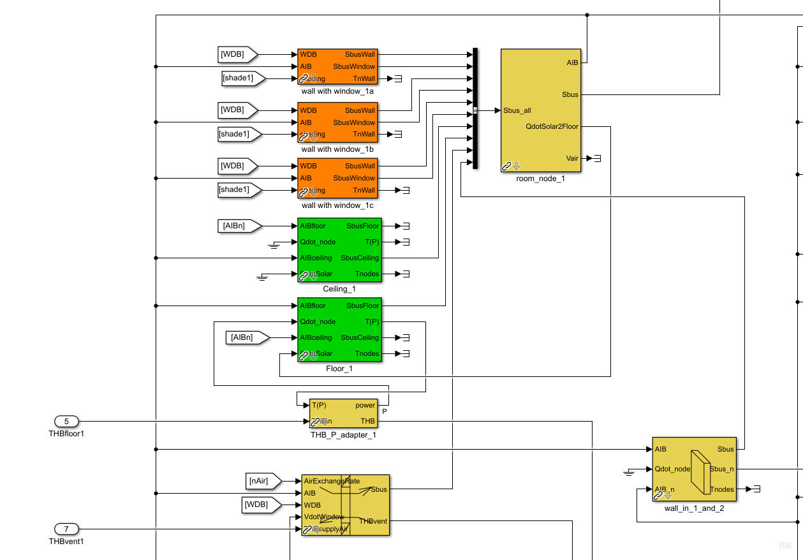

Room_Node
Room_Node Path: CARNOT/Basic/Thermal_Models
Room_Node
Path: CARNOT/Basic/Thermal_Models
Purpose
Thermal model of a room or zone in a building model with
convective and radiative temperature nodes.
Description
This block calculates the temperature at a node in a building room. The incoming energy flows are defined in the
Sbus. The input
is a bus with the different heat flows to and from the room node.
An energy balance is made for
the room node. The temperature is calculated by dividing by the heat capacity,
so that the equation for the room node is the
energy conservation equation
:
dTnode/ dt = Qin /(mnode*cnode)
The room node integrates radiative and convective heat flows. The elements QdotConvective and QdotRadiative are evaluated in the nodes.
The air volume of the room is defined by the parameters of the model. Properties of air are calculated once at initialization (with node start temperature, humidity and air pressure).
The output AIB of the room_node have to be connected to the walls, floor and other components of the room-zone. Solar gains (QdotSolar) is sumed up in the model and given as output QdotSolar2Floor to connect to the floor model.
Connect all incomming Sbuses with a Bus Creator block to a new Sbus_all (see following figure). Do this even if only a single Sbus is connected to the room node.

Inputs
Sbus_all - Bus created by a
BusCreator block of Simulink combining all Sbus outputs of the different models
(wall, floor, ...).
Outputs
AIB - Air Infiltration
Bus of the room zone
Sbus - sum of all enerering thermal power
elements in Sbus_all (output for information and further evaluation)
QdotSolar2Floor - sum of solar gains to be given to the floor of
the zone
Vair - air volume of the room or zone in m^3
NOTE: Only one floor is allowed per room / zone.
Parameters and Dialog Box
Note: The air temperature may
set as "natural", which means that the temperature follows the
convective energy flows in the room.
If the temperature ist set as "ideal
profile", the convective room temperature is taken from a a
repeating-sequence block of Simulink. The parameters are defined by the
following entries: "time vector for ideal profile" and "values
for ideal profile". The heating demand of a room can be calculated by
integrating the "heat flow to convective node" in the S-vector (use S_selector and a
Simulink-Integrator).
Characteristics
Direct Feedthrough Yes
Sample
time
Inherited
from driving block
Vectorized
No